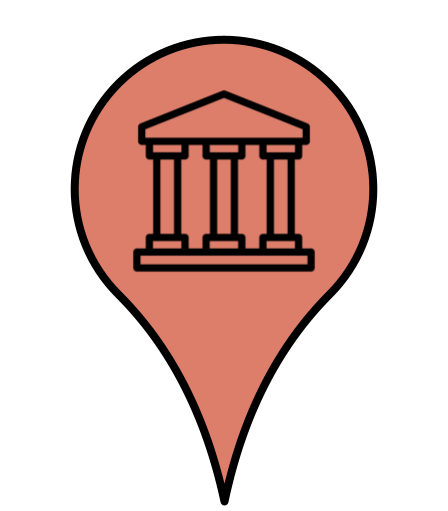
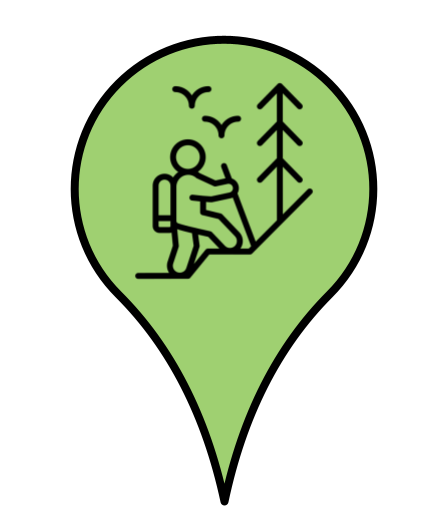
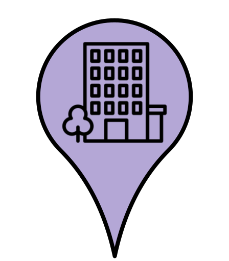

Various Attractions of Duluth, MN
Various Attractions of Duluth, MN
Welcome to Duluth, Minnesota, the gateway to Lake Superior! The area offers a variety of places to see. Seen below are several popular attractions in and around the city. These attractions are catagorized into three different types (seen below) in order meet everybody's unique interests. We hope that you enjoy our great city during your stay!

Historic Attractions
Outdoor Attractions
Other Attractions